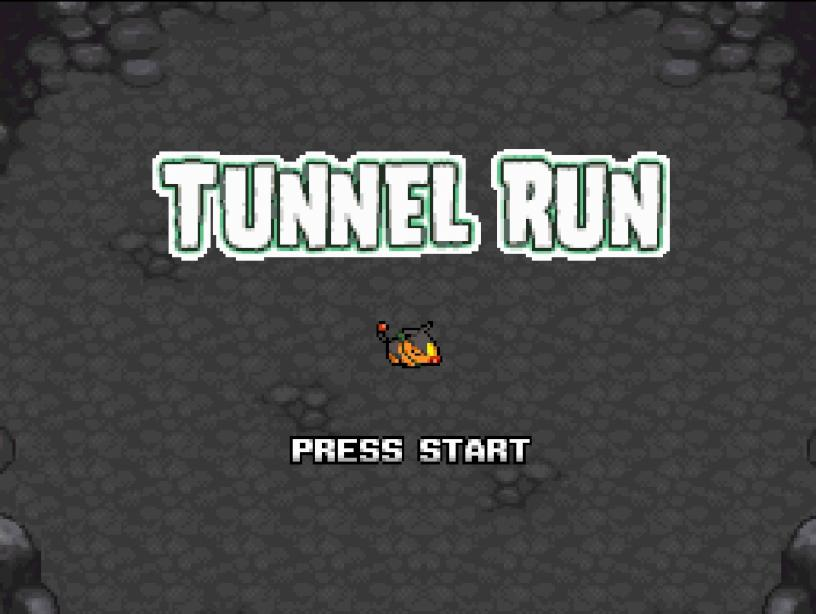
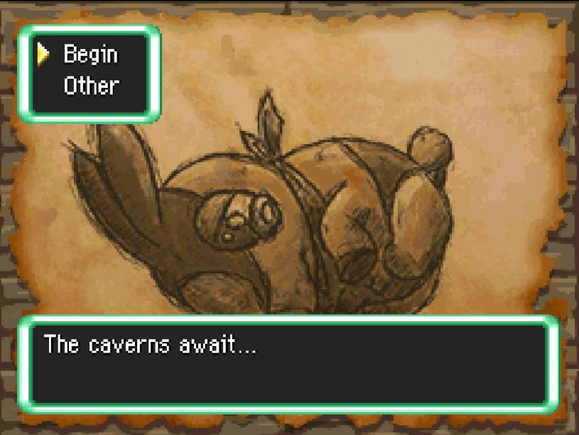
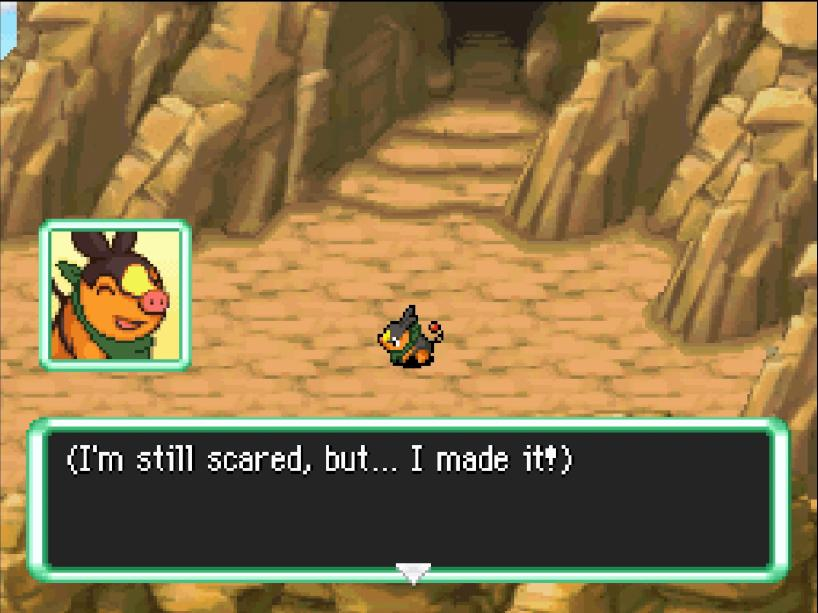
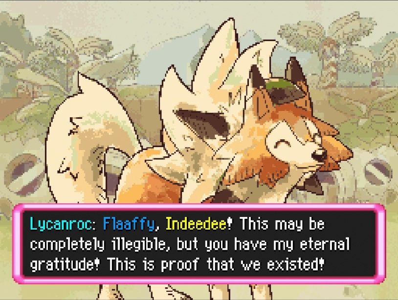
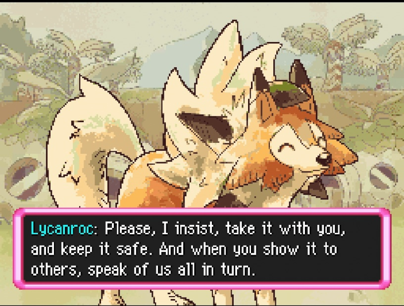
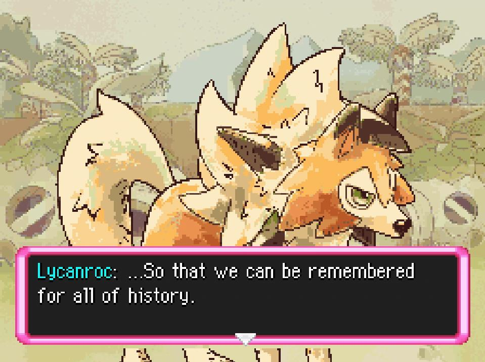
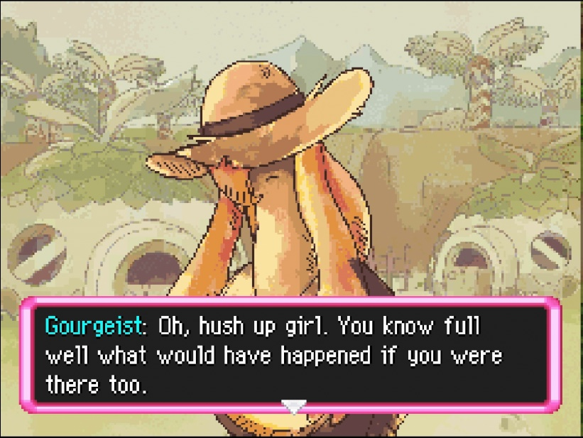

The ranks of these games are graded with a quickly whipped up program. You may find the program here. See more at the bottom of the page.
Reviews are nitpicky and occasionally a bit harsh by nature, please do not take offense if one of these are your favorites!
Furthermore, more recent posts are half analysis, half review. Keep that in mind when looking at the older ones.
Blacked out parts are spoilers, hover or tap to reveal. Like this one!
Current Thoughts:
Difficulty: Fairly Easy
Time: 30-40 Minutes
Dungeon Length: Max 10F
Link: SkyTemple Discord Server
Created: May 27, 2026This one has potential, made during a hackjam, perhaps the creator didn't have all the time to add more depth, or for another reason revealed later. As you can see, I had a bit of fun going through some of the details I noticed.
Starting off with the hook, I wouldn't be too scared to wake up as a Pokémon, but I am also weird and would honestly love to be in that situation. Regardless, the main reason why the MC is scared is because they woke up in a dungeon, which.. let's be honest, we would all be scared. Far from civilization and really, anyone but ferals? Yikes. Eventually, I think the fear would wear off if I kept my memories from my life before.. and all the times I played PMD. I'd know I have a fighting chance after the first feral went down without too much trouble.
First things first, custom icon, title screen and top menu? Very neat. Sure the icon was the bare minimum of recoloring the background, but it makes sense. Silver for the fact you are deep in a grey dungeon, rather than out under the blue sky.

And our MC is depicted in both the Title Screen and Top Menu, I do see they are wearing a scarf, we will get back on that later.

Or.. I suppose now, you wake up next to a green scarf. Now, I was thinking about the significance of this, and just came to the conclusion: Tepig is always wearing a scarf in PMD: Gates to Infinity promotional material. Which kinda adds the detail of: you weren't really meant to be brought to the depths of this dungeon or even this game. Why were you brought here? Who brought you here? Questions that really don't go answered.
The game takes place across four weeks, but you really only play one day of each week. All of them are pretty much dungeon crawling then cutscene, which is fine. You find yourself with someone named Rosa, who is a fire Pokémon of sorts, where you then run away from because she looked scary, which fair. The rest of the game, your goal is to escape the dungeon and get to sunlight, or find Rosa to get help.
You learn a bit more about the dungeon by the end of the first week and it really does seem like they wanted to incorporate more, but perhaps they never got to it.
Eventually, you make it to the surface, where the MC is overjoyed to see the daytime sun after four weeks. They enter the nearby city and join the Stellar Guild. Now, this is the first time I've heard this name, but we will get back to that in a bit. They make it their goal to rescue and help others, essentially turning it back to the standard PMD gameplay loop. One thing though, they end up in charge of training new recruits? You're level 5! You still got so much training to do yourself! Perhaps the time frame was a bit misunderstood :p Anyways, they make reference to their partner Alli and their own name, Blaze. And also a drop the name of the area, Stellar Isles.

I decided to dig deeper into the ending: turns out, it's a reference to The Stellar Isles, a tabletop RPG game. Somehow we have ended up at a dungeons and dragons like ruleset. Link to the rulebook referenced in the spoiler. Strangely enough, the inability to level up through defeating monsters kinda makes a bit of sense now?
Wait, was Rosa a trap? Was their helpfulness a facade? Did Tepig do the right thing to run away? The reason I say this is because one of the Stellar Guild's primary enemies is "The Cult of the Everdragon", a Cult who employs dragon-types and brainwashes people to join. This is only found on the wiki... nothing in the rulebook.Link to the wiki referenced in the spoiler. The wiki isn''t well filled out and was created nearly a year ago.. so fair to say, it probably won't be. The creator of this hack didn't make the official ruleset, but apparently, it is actually based on a D&D campaign they joined, and that's what the extra lore drop at the end was about.
Well, I would ask before I realized that Rosa is a Skeledirge, so not a dragon type. I may have lost the plot there in theories, but whatever, I will keep that in regardless, because.. why not!
So this entire hack is kinda just extra lore for the creator's DnD campaign they joined, very interesting! And I suppose the scarf was from their Pokésona, but honestly? I think I still cooked on my explanation :3
Difficulty: Fairly Easy
Time: 20-40 Minutes
Dungeon Length: Around 4F
Link: Google Drive
Created: May 27, 2026Another hack jam submission, just one of those one-shot stories that doesn't have too much going for it. The next paragraphs are the story. There really isn't much to review.
Essentially, Aggron opens a bar in Spinda's Cafe for nighttime customers and a group of Pokémon come in and make a scene. Aggron and Spoink fight then and kick them out. Then Larvitar, someone you have raised since young, visits the cafe during the day, where you leave Spoink to care for them while you get groceries. You come back to find out that Larvitar was kidnapped by the same people you beat up last night, where somehow Spoink wasn't able to defend this time? Who knows.
Well, you go through these really short mystery dungeons to get to where Larvitar was taken. You find out that some other Pokémon (a Mimikyu) now has held captive the group of Pokémon and Larvitar. You fight the Mimikyu which I threw the groceries at them and that made them unable to move and attack. I assume it was because they kept trying to use the groceries, which you cannot use. Well, you kill them and then you make them go to sleep with one of Spoink's moves, where... I duno? I duno where they pulled out the sleep card, not gonna lie.
And then it ends with all of them making up without further discussion after the battle, going home together. They lived happily ever after ending ig... even though kidnapping and physical assault just happened, but who cares.
It wasn't bad, but it wasn't good. I lowkey expected at least one ending where it was like: you left the groceries, therefore you went bankrupt. gg. or at least something for dropping/throwing/using the groceries. Also, the screenshots included make it seem like using the groceries was gonna do something.
Regardless, I guess I expected a better ending than that. It just.. kinda fell flat and like a nothing burger. Standard shovelware hack jam.. hack.
Difficulty: Fairly Easy
Time: 2-3 Hours (Officially 4-5 Hours)
Dungeon Length: Average 10F | Max 13F
Link: Google Drive
Edited: May 20, 2026 | Created: May 19, 2026This was certainly an experience that had me thinking for a while, thinking about the ending, thinking about what really happened. An experience to replay. But, first things first.
The entire hack has a visual novel feel, all the dialog is on the top screen, with really neatly drawn portraits. They all have quite the wide range of emotions and it is quite cleanly done with not many noticeable visual issues for something that overhauls the dialogue system.
Personally, the custom music wasn't overbearing and fit in quite nicely with the PMD style. Unlike other hacks, even though the music was streamed, it didn't suffer from issues like clicking or stuttering. While saving, the music fades out, which is a given, as streamed music stutters when saving. Just some nice UX I noticed.
Well then, onto what we are here for. The main story doesn't feel sluggish and has plenty of well placed humor. Very well rounded, well timed emotional moments included as well. What I didn't catch in my first playthrough, but did catch on my second was the subtle hints of the truth. Nobody but yourself, your partner, and the mayor are alive in this small village. They are all spirits, wanting closure. You help them get that closure through their various requests.
The festival was made to honor the ones lost in the flood. A [stone] sculpture is traditionally created for this festival. It's a direct metaphor for.. well, a funeral. A stone tombstone was created to honor the fallen.
And through this festival held in the town of Nostalgia.. not only do you find acceptance and closure, but so do the spirits who died in the flood.
So, the subtle hints, right? There are likely so many that I missed, even on my second run, but the one that stood out to me most was Lycanroc's entire quest line. He wants everyone to remember the village, the people. The deed that was found in the ruins, even a smidge of evidence that they even existed gets him really excited. Yes, proof that they existed. Interesting choice of past, rather than present tense...

Eventually, he gives you a flower, a form of life he managed to salvage from the flood. The one thing he managed to help keep alive. He wants us to keep it safe and to share the story of the people so that “[they] can be remembered for all of history.” He really wants people to remember, even if he's a historian, the use of past tense and the desire to be remembered is.. very out there.


Gourgeist's word choice is somewhat interesting. They state that Flaaffy knows what would've happened if she was there too after she laments that she wasn't there to help. They imply that she would've also died alongside the rest of the village if she was there. I find that interesting, since it's in a scene where they bicker about photos.. and well, at the surface, it seems like a standard, maybe slightly exaggerated response, but on the second go, everything seems like foreshadowing.

And well, the children's mock exploration team name of “Lost Zone”, I couldn't come up with a solid-enough conclusion… (like these other ones are xdd). But, there's some meaning behind it.
Furthermore, Flaaffy, when her partner suggests they should start the festival early to celebrate defeating the adversity of the glacier, she protests strongly against it. While there was preparation, it was a strong response. She's not ready to let the spirits go, nor are they. The mayor seconds this, saying that preparations are not yet finished.
So, in the end, you all find closure. Everyone says their final goodbyes one by one, thanking our main character for what they've done throughout the final days. Flaaffy's mother only allows herself to go to the other side once she's seen her prove herself through her helpfulness in the festival preparations. And from their stargazing one night together, even though they may be far apart, they are still together through means of the stars. She disappears like the rest, but… through grief and sadness… is acceptance from Flaaffy.
And that's where the story ends. What a ride, and one that left me thinking. This story is resolved and so is Flaaffy's grief. Thanks 1235Nut, Dukeashura, Emmuffin, Estelaris_, and Top_Kec for an amazing story.
Difficulty: Expect 1 KO | Fairly RNG
Time: 30 - 45 Minutes | No Saves
Dungeon Length: 10F
Link: SkyTemple Discord Server
Created: May 19, 2026I decided to go with the program's rating, because even though it was very unique, it's a one time experience. These other games, I've been able to run again and enjoy, however, this one did lose its novelty quickly. Still an enjoyable experience for the first time though!
The experience was very dependent on crude humor. This is not a deep experience or one that will keep you thinking. Def a different experience from these other hacks. Didn't try to go for emotional and sad, nor a deep story, just under an hour of laughs.
The hack starts with a disclaimer that the maker doesn't live in Canada, and that any offense to Canadians is 100% intentional. So you know you are in for a great time.
Imma be honest, I played this at 2 am with some friends in VC and.. it was hecking hilarious, and probably would still be if we weren't half asleep :3
This is truly, an rom hack. Very humorous with a dash of metagaming.
Difficulty: Fairly Easy
Time: 45 - 75 Minutes | No Saves
Dungeon Length: 5F & 10F
Link: SkyTemple
Created: May 18, 2026I wanna play this again, challenge it's score of 80.
It first starts out with a disclaimer, however, it is mostly just for the usage of swear words. I don't consider these to influence the score, they can be used to convey emotion, but aren't required as seen with many other hacks.
Most of the hack takes place in a flashback, which honestly, I forgot that was the case. Since that was the premise of the jam, alright. It does add a layer of suspense.
I do like how it shows dungeon-ing without the Guild's insurance is actually quite dangerous. The badges pretty much are your emergency exit, and when you aren't an official Explorer, you pretty much just die if you are alone in a dungeon. I've always thought that was the case, but its nice to see it reflected in the lore. I never KOed, so I never got to see the dialog.
Some of the NPCs when you go into town were quite humorous, albeit a bit out of place. I don't even know what else to say, but it was amusing.
A lot of things were custom, overworld, using sprites from Pokémon Mystery Universe, which was clever. Music was imported from other games, for better or for worse. One of the tracks was from mainline Pokémon game: they have a different style and I felt it immediately. Nothing else to say about that, it was just odd. The DS also doesn't fare too well with imported music so I can forgive the clicks heard in the custom music. Although, I have seen other hacks not have this issue, so perhaps its just a way of finessing.
There were no save points throughout the entire game, which, I suppose for a max runtime of 75 minutes isn't bad. But maybe someone would like to take a break or just have some security that they won't have to play the whole game again if their DS dies or the flash cart is nudged.
Overall, it was a good, one-shot, emotional story. I would actually not mind more. Or perhaps knowing what happened to the third person who they vaguely mention. The MC's mother figure says they don't want the MC to end up like "...", but they never elaborate on that. It would be cool to have more backstory.
Difficulty: Expect to KO multiple times.
Time: 1 - 2 Hours
Dungeon Length: The Whole Game is One (24 Floors).
Link: SkyTemple
Created: Mar. 13, 2026Being awarded "best gameplay", I had high hopes...
You get these pickaxes you can throw to tunnel through, honestly, pretty cool idea! The main issue is that you have no moves, which is fine... just one to find the stairs. The issue is... PMD, there is no way to run away from an enemy, once you are in combat, you are there, and if another one comes in, you are actually cooked, no escape.
There are a ton of IQ raising items like Wonder Gummis, Orange Gummis, and Nectar that spawn, which do help get through the dungeon, which I think is the main goal. To wipe out of the dungeon like 200 times in order to get the IQ skills by the end of it.
Even so, it was still quite a challenge, which is fine... but it did feel kinda unfair, especially since there are no checkpoints in the entire 24 floor dungeon.
Once you get to the end, you have to go back down after getting the treasure with a 300 turn time limit. It wasn't a challenge at that point.. just an annoyance, since every step you took on a new floor would play the "Something is coming..." line, causing the music to stop and repeat from the beginning... which isn't good for polish.
Furthermore, there's a lot of small things like the mission objective menu showing an incorrect message or just "Dummy", which is fine.. those are just bonus points in my book. A lot of hacks just don't change it.
There are three endings, but it doesn't even feel like it. There really is no difference apart from the effort you put in. The ways to get them is if you:
Oh yeah, what's the will about? I don't know! There really wasn't much lore explaining it. Does it sell for a bunch of money? Who knows? Just that you take it because its more treasure. I wanna replay it to see what the will was called, but don't really wanna go through those 45 minutes of grinding.
All in all, the pickaxe gimmick is cool.. but the implementation was bad. I wish you at least got Agility so you can run away. Nerf my attack, that's fine, just give means of escape...
Oh and also, you aren't guaranteed a pickaxe if you KO. You have to find one on the ground, and the spawn rates were not guaranteed.
Difficulty: Puzzles, But On Par w/ the Original
Time: 3-4 hours
Dungeon Length: 30-60 Minutes
Link: SkyTemple
Created: Mar. 10, 2026The ROM starts off with a cutscene, of who I presume is the MC, writing a diary entry. I have never seen this before! This is super unique, having dialogue the moment the game starts, rather than pressing New Game. We are in for a new mechanical treat.
You do not play a normal dungeon crawler, but the dungeons are these remember places where you go and kidnap save people from these places.
The dungeons are very puzzle oriented and aren't combat heavy.
Right off the bat, the first time skip? Your play time is set to 101 hours and your level goes up by a lot. Finally, a timeskip that increases stats/level... the playtime is a neat thing though!
Fully custom borders and backgrounds, I wonder how they did the cutscenes, since they are just.. super cool!
Heck, even the help documentation is changed to reflect the lore... its really dope!
Music is stock, but has effects that change based on what's going on in the cutscene. Furthermore, character portraits also change mid text box, something I didn't even know was possible..
Holy heck, I don't even know how to describe any of this experience... just go try it yourself... it's leagues better than anything else I have seen, but I suppose that is expected for a game jam winner. They replaced the hecking ejected cart error message too??? I didn't realize that was even possible!
Difficulty: Pretty Easy
Time: 2 Hours to Beat
Dungeon Length: Around 10F | Max: 15F
Link: SkyTemple
Edited: Mar. 9, 2026; Created: Dec. 1, 2025I decided to replay this hack, because I felt like my previous review was a bit harsh. This one is more in-depth because I decided to comment on each chapter after I played through it. I will do this going forward.
Starting off, I chose to name myself "Scorbunny", since I personally the story fits better this way. This review and its grade will be treated as a 3rd person story.
I love the humor, I pretty much giggled at most of the jokes.
It's interesting how it takes place in the far, far future after PMD Sky, but like the new Pokémon who appear in place of the others.
Your level is locked at 20, which is plenty enough for the dungeons in this game. However, this level seems.. weird. If you are the savior of the future from the original game, why are you LV20, rather than high 30s, low 40s? Seems a bit inconsistent, but I digress.
You and Rockruff do missions behind a transition card, which is fine, its a short story and prevents filler for that. However, I wish your level increased by a few levels through that transition, just for story/gameplay consistency. Also, how as Rockruff's rash behavior not caused a problem throughout those, but just now when the user is playing? Perhaps it is mentioned, but I may be wrong.
One thing that made this a better 3rd person story than an insertion story was the fact the MC says they wanna return to the human world badly. Honestly, if I was here in this world of PMD, I'd want to stay here the rest of my life. The MC 100% misses people from back home, and I would too. It is implied in the dialogue, but dang.. I duno if I would go back to the human world regardless.. this just seems more fun.
The dreams being your previous partner, is nice foreshadowing. It's hard to say too much, since this is my second time.
The battles during the Daylight Festival use internal names like TTBoss1-3. I don't know how hard scripting or whatever is, but... I've never seen this before. I don't think any other boss fight in this hack even has that issue though.. strange..
Ch. 8: The scene where the MC loses hope and isn't motivated to do anything is a bit.. cheesy. They turn around so quickly though tbh, they are hopeless then Rockruff goes "ruff ruff, imma snuggle you so you feel better", and then MC is now.. completely fine after not putting their heart into anything the past few days? I duno, just feels like most of it would happen for me, but rather than it be like "wao, i am full of hope now", it would just be a quiet "thanks", and then a slower recovery or so. Granted, I'm not really one to lose hope that quickly, but I also don't really insert well with Scorbunny to begin with. Also, I feel like a transition card would be better, since it actually just seemed like Rockruff went back to his bed during the night.. rather than an entire day passing. They could've also been in Treasure Town to have this conversation about their day...
Chapter 10: For the boss fight... why is the location text "Dream Boss"? That seems.. not right for world building. I duno, just a simple "???" could've done just fine.
Back to the whole intermission, when they say "We need to train up!" and a title card shows.. I do expect a higher level and boost in stats, just to be consistent.
Other than my nitpicking.. it's honestly pretty good writing. Pacing or transitions could've been better, but tbh, this is kind of attempting to fit a story about development and such within 2 hours. It feels.. like it was made for a game jam.
The two new songs are nice remixes and they play during the Final Chapter. The 2nd one is a bit crackily, which made it a bit hard to enjoy, but the final boss theme's audio was fine.
I personally think it's a pretty neat take on the Wishing Star and Dynamaxing. Cool to see some elements of Super Mystery Dungeon in here as well.
A lot of internal names, or just.. weird names used for the Boss areas, and just for some too! Some actually have proper locations, and others have "[Location] Boss", boss shouldn't be in the name.
Also the end scene, I've got the idea that it's Sobble on the left and Rockruff on the right, in the MC's POV, but I wonder if there is a reference here. It felt a bit outta place, but it's creative.. I think.
All in all, it was a pretty alright story hack, the gameplay was quite easy, I only used one Oran Berry during the teacup fight. Otherwise, Scorbunny's moves are so good, that the game is quite easy.
Also, either I'm going crazy, or some of the chapter cards were missing...
Like the OP says, the player stays at Level 20 and there are no overworld segments, it's easy, back-to-back dungeon-ing with story in between. It's a full story-only hack which aren't the worst in my opinion: I do like myself a good story hack!
The MC talks in this hack, which wouldn't be a problem if it wasn't an insertion story, (the game asks for your name and a name to give your partner). This honestly is the only issue I have with this hack. The main reason that the MC in the base game doesn't speak often and somewhat generically, for lack of a better word, is because the MC needs to fit a wide range of people. When the MC says things that I, personally, wouldn't have said in that situation, it breaks the immersion a bit.
Despite this, that doesn't mean the story or writing is bad, far from it. I feel like it captures the feeling of the original game. It flows nicely and doesn't drag on. I was not bored while I was playing, (granted, it wasn't a long hack, but still).
Don't let my opinion discourage you! There's a reason I didn't go too into detail! Honestly, I was tempted to replay the hack after seeing all the positive feedback on it, (it has been a few months since I played through it). I personally would replay with generic species names to get that 3rd person experience I feel this game needs, however, if you want to play it as an insertion story, go for it!
Difficulty: On Par w/ the Original
Time: 27 Hours and Counting...
Link: SkyTemple
Edited: Feb. 18, 2026 | Created: Jan. 31, 2026Starting off, the gameplay/story balance is very similar to the base game and I personally would say the difficulty is about the same, if not a smidge harder. This a third person story and not an insertion story, which I feel allows the character's backgrounds to be deeper.
Things I like and noticed from this hack:
(Blacked out parts are spoilers! Hover over them to view!)
Overall, the story writing is hecking amazing and really keeps me wanting more! It really does capture the charm of the original game, while being its own great and unique story!
Fanart is reposted on their bluesky profile, so if you have played up to the point I have, then do check it out! Some of them are included in the zip file you download, but there are some new ones that are worth checking out! Be warned, the fan art will spoil the game if you haven't completed it.
This hack is still a work in progress, with the last update being February 2026, which is actually a bit of an issue now! The final part in the game has you frozen in time, being in some sort of rendition of the dark future. You cannot earn experience here, therefore, if you are underleveled, its a bit of an issue! This is the only place in the game where you don't earn experience, apart from Shinx's nightmares in early game.
TBD | Still Playing or Going to Replay | Any
EX+ | Unmatched | 100
EX | Masterpiece | 98
SS | Wish There Was More | 95
S | Marathon Worthy | 92
A | Impressive | 85
B | Solid Play | 75
C | Par for the Course | 60
D | Not Worth It | 50
E | Quite Annoying | 30
F | Actually Unplayable | 0
The plus (+) or minus(-) at the end of the grade is determined by the "bonus score", things that aren't essential, but are nice.
An asterisk (*) means an ajusted score. My program either didn't return something I felt accurate, or wasn't capable.